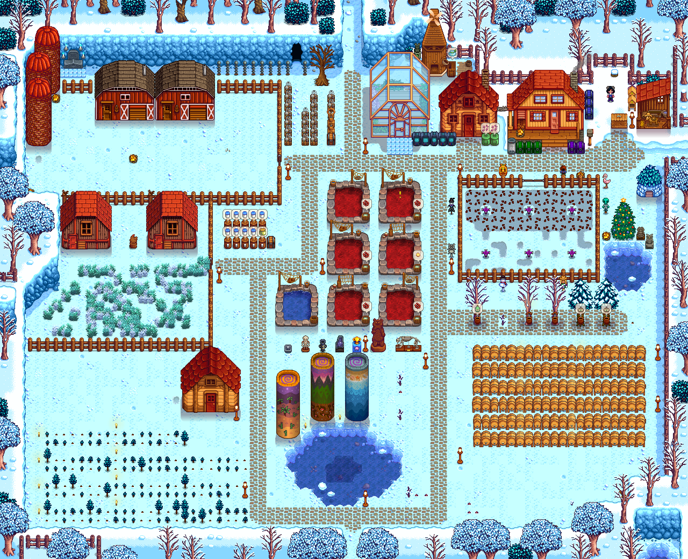

I have a variety of animals on my farm. In my barns you can find mostly pigs, but I also have cows, a sheep, and a goat. In my coops you can find mostly chickens, but I also have dinosaurs (they look like lizards), a rabbit, and a duck. I also have ponds that are filled with lava eels.
In every season except winter the pigs dig up truffles. I use these truffles to make oil. The cows and goat produce milk that I use to make cheese. The chickens produce eggs, which I use to make mayonnaise. The lava eels produce roe, which I use to make aged roe in preserve jars. I also use preserve jars to make jelly with the crops that I grow. I use kegs to make wine.
There are a variety of non-playable characters players can interact with and even marry. I married Maru, who is a nurse and likes to build robots. We have one daughter and one son. I also have a cat named Miso and a horse named Grover.
Below you can watch a video of me showing you my home and my farm. There is also a full picture of the layout.
